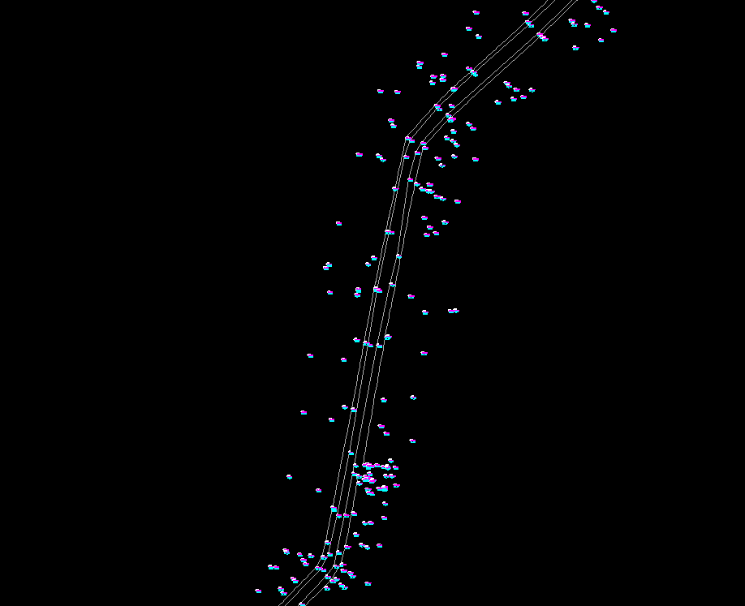
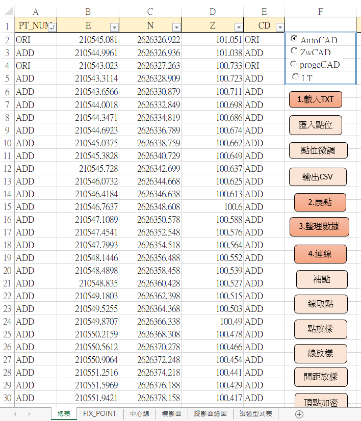
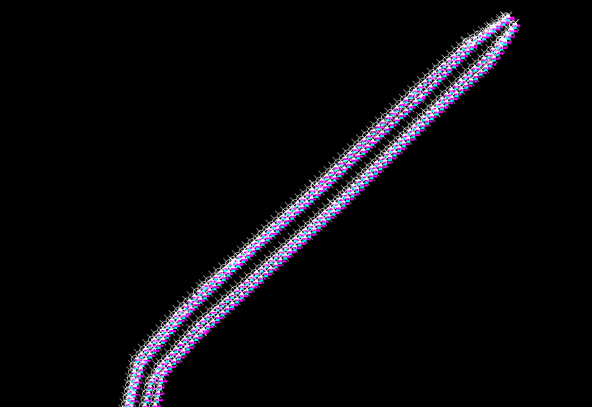
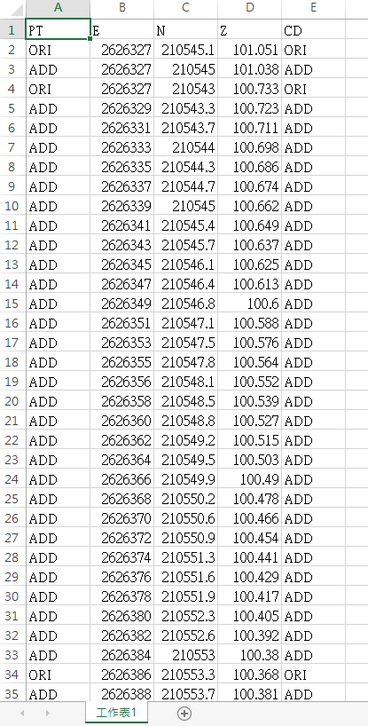
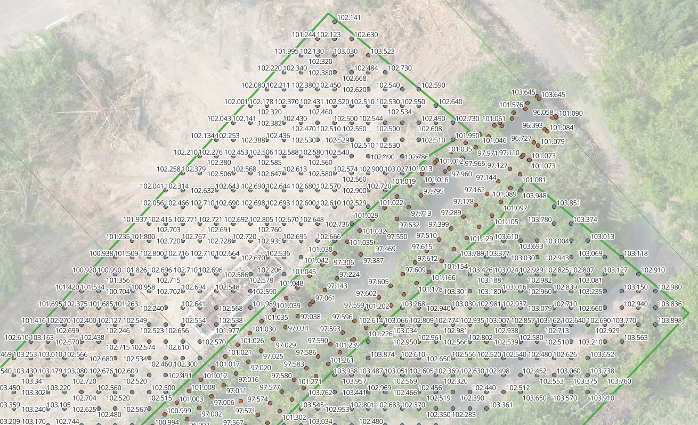
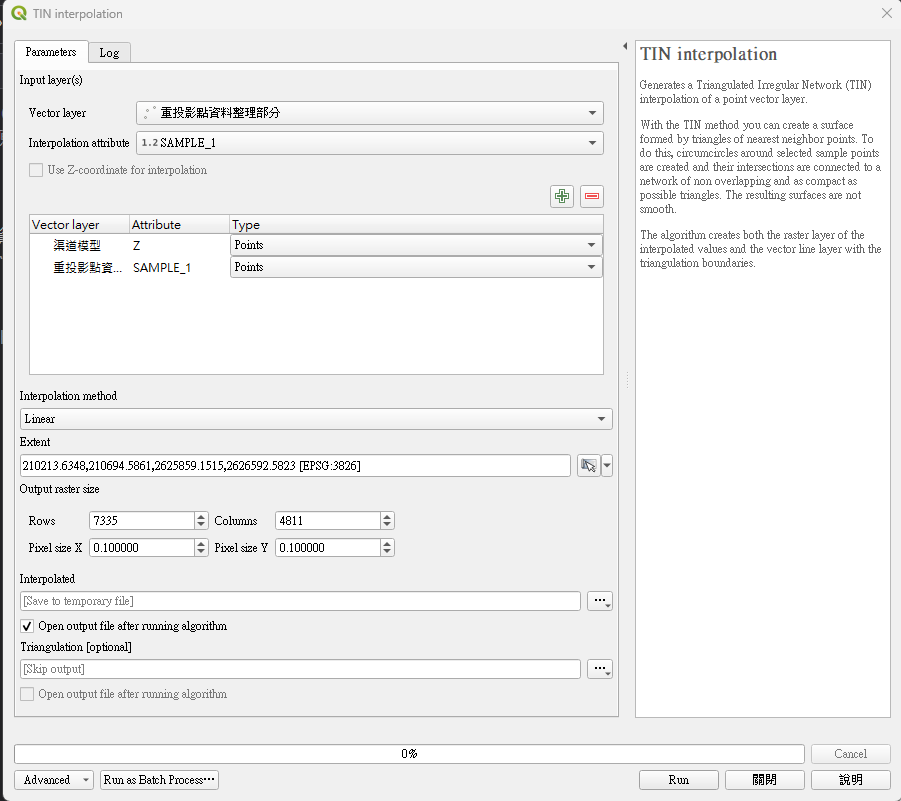
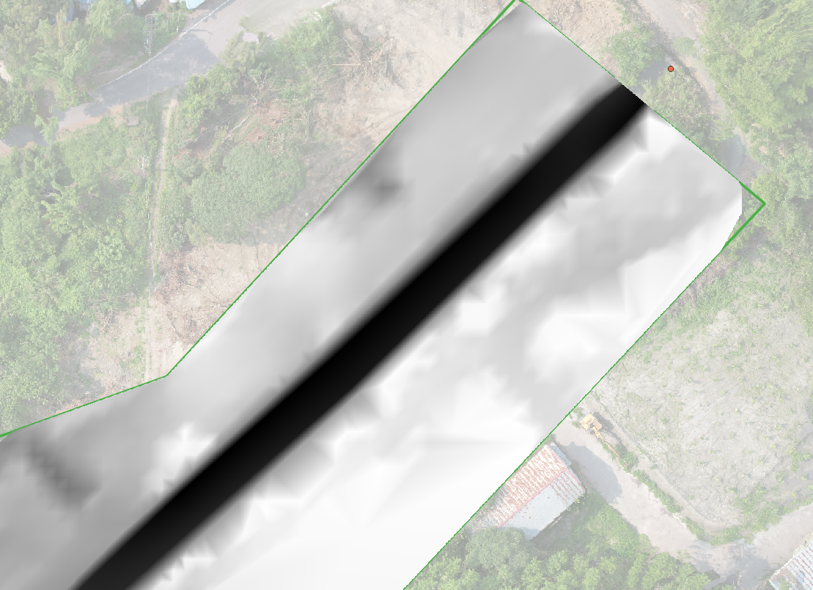

QGIS航拍地形模型整理
專案背景
經由航拍測量後的DEM資料經常因地表植物以及行水中等問題導致經WebODM產製出的地形模型失真，如欲進行後續的地形剖面(橫斷面、縱斷面)時會有需要手動修正的困擾。
本專案當初採用全測站進行收測，但年代已久地形已有部分變動，僅可認定在結構體及山坡地等未開發區域的高程為正確值，其餘部分則先僱工進行雜樹木清除，以航拍測量套疊正射影像後的屬於裸露地的高程視為正確值，結合上述兩項測量成果進行重繪以取得較為精準的地形模型。
重繪方法
經航拍測量後所得到的結果如下:
- dtm.tif
- odm_orthophoto.tif
匯入GIS後將裸露地部分的範圍做一個範圍，並且用這個範圍作為遮罩對原始dtm做修剪，之後將dtm的像素格放大，取得像素格中心點進行dem取樣，做為不規則三角網的高程內插來源。
前人測量資料如為結構體部分則須將該線段的頂點及線段加繪內插後的點資料繪出成CSV檔，之後匯入至GIS中做為不規則三角網的高程內插來源，最後與裸露地部分一併進行不規則三角網的高程內插(TIN Interpolation)即可完成，作為後續剖面用的地形模型。
操作步驟
QGIS
- 將航照測量產製出的
dtm.tif匯入至QGIS - 將航照測量產製出的
odm_orthophoto.tif匯入至QGIS - 繪製要留存的測量範圍(裸露地部分)，得到
AREA.shp - 以
AREA.shp為遮罩範圍，使用工具Clip raster by mask layer針對dtm.tif進行初剪，得dtm_area.tif。 Raster>Projection>Wrap(reproject)...將dtm_area.tif處理成2M*2M的像素格，得到dtm_area_2m.tif。- 透過工具
Raster pixels to points將dtm_area_2m.tif各像素格生成中心點資料，得到dtm_area_2m_points.shp - 透過工具
Sample raster value將dtm_area_2m_points.shp針對dtm.tif進行採樣，得到dtm_area_2m_z.shp，帶有高程資料。
目前所得到的航拍高程資料已經初步完成，重投影的部分是將原本過於密集的像素格放大，後續要進行手動編修時才不會那麼痛苦。
CAD部分

- 將平面圖上既有點資料收進Excel
- 確保線段各頂點高程皆可對應到既有點資料
- 將線段複製貼上原位置到新檔案

- 點選按鈕 "頂點加密"

- 點選按鈕 "匯入點位"
- 點選按鈕 "輸出CSV"

CSV檔案可以直接匯入QGIS，如果不夠密則容易導致模型失真，不規則三角網會去抓最鄰近的點資料作為高程內插來源，密一點模型比較不會抓錯。
QGIS
經上述兩個步驟後，點資料初步整理內容如下，裸露地部分參考航照測量回傳內容，渠道部分參考平面測量成果，進行TIN Interpolation，將上述兩個資料來源一併計入高程內插即可得到一較不失真的高程模型了!



頂點加密原始碼
main module
1 | 'TODO: |
clsPt
1 |
|
clsPL
1 | Private CAD As New clsACAD |